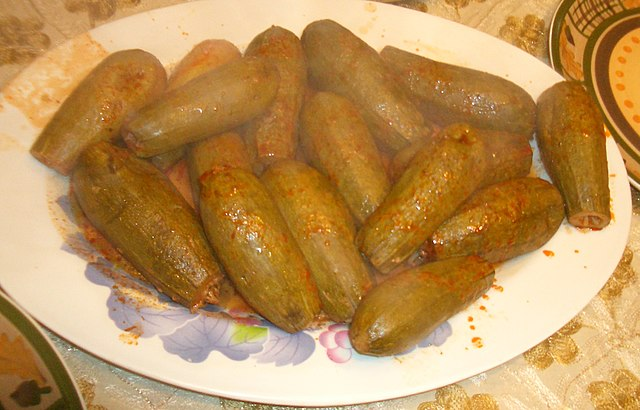

Kousa Mahshi (stuffed courgette) is a middle eastern dish that is both healthy and delicious.
Wash the zucchinis and core them. Rinse the rice and drain. Then, place it in a glass bowl. Add the minced meat to the rice. Top the rice and minced meat with spices and salt.
Melt the butter and add it to the rice/meat mixture. Use your hands or a spoon to mix the stuffing ingredients really well.
Start stuffing each cored zucchini (until you reach ¾ to its opening). Close each piece with a tomato chunk and place it in a large cooking pot. Once all the stuffed zucchinis are in the pot, add enough water to cover them. Bring the stuffed zucchinis to a boil for around 10-15 minutes.
Mix the tomato paste with a little bit of water. Add the tomato paste to the pot with 2 bay leaves. Season with salt to taste. Simmer the stuffed zucchinis on low to medium heat for about 30-45 minutes. Remove from heat and serve hot.